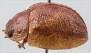
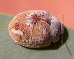
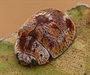
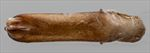
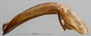
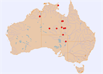

Click on images to enlarge


Male, Yaningurie Waterhole, N.E. South Australia
_SM.jpg){kind=link}

Female, Tanami Rd, 160km NW Alice Springs, Northern Territory


Male, Yaningurie Waterhole, N.E. South Australia


Aedeagus, dorsal view (Boulia, Queensland)


Aedeagus, lateral view (Boulia, Queensland)


Distribution
Name
Trachymela sp. Ta130
Reference specimen
2007-169, Tanami Road, Alice Springs, Northern Territory.
Adult Description
Length: ♂ 5.3–6.8 mm (n=8), ♀ 6.3–7.7 mm (n=19).
Colouration:
- Head: Most commonly, uniformly yellow-brown to mid-brown, less often with a pair of black patches behind fronto-clypeal suture, one on each side between eye and central suture that is quite variable in size and intensity, sometimes being no more than a slight darkening of epidermis, never merging across central suture; mandibles dark brown- or black-tipped; antennomeres uniformly straw-brown.
- Pronotum: Brown, concolorous with head, usually uniformly so, less often with two black or darker brown maculae situated one on each side between eyes and humeral callus in posterior half of pronotum, rarely extending into anterior half.
- Scutellum: Brown, concolorous with pronotum, with margins usually darker brown.
- Elytra: Brown, concolorous with pronotum, often completely so, sometimes with dark brown (rarely black) patches near centre of border of elytral disc and margin and in a broad, usually interrupted, band from anterior elytral margin just above humeral callus to around elytral summit, the black shade in these areas is sometimes confined to raised features such as verrucae; punctures are similar to or a slightly darker shade than interstices, humeral callus concolorous with surrounding area.
- Venter & Legs: Light- to mid-brown with metaventrite usually darker in shade, at least laterally, inside surface of elytral epipleura brown.
- Cuticular Wax: Wax of two shades is present – white and light-brown; head and pronotum are predominantly covered in a relatively thick and quite uniform layer of white with some streaks of brown present, most noticeably along anterior margin of pronotum; elytra present a complex pattern of white and brown, with longitudinal bands of these colours alternating over marginal area and disc; elytral summit is often almost wax-free, made even more prominent by a thick rim of white wax along its posterior margin.
Morphology:
- Shape: Very slightly gibbous in lateral view, greatest height viewed laterally well in front of middle of elytral margin, dorsal surface with noticeable discontinuity in curvature between pronotum and elytra.
- Head: Punctures moderately to very large (pd ≈ 2–4× ef), often very unevenly distributed, interstices sometimes elevated and rough, especially near eyes, resulting in longitudinally oriented ridges. Antennae short, particularly in females (AL/BL: ♂ 36–39%, ♀ 29–32%), filiform.
- Pronotum: Almost evenly curved transversely, foveal depression absent with epidermis elevated in a small pustule behind eyes, discal area with surface quite uneven and puncturation clearly to more vaguely impressed, a small, elevated pustule is sometimes present towards lateral edges of disc, puncture sizes vary considerably and are slightly unevenly distributed and relatively dense (spacing ≈ 2–3 pd), becoming much coarser at lateral margins. Front margins join lateral margins in a smoothly rounded right-angle, with lateral margin initially straight before curving smoothly and gradually towards rear margin, broadest just in front of posterio-lateral angle.
- Scutellum: Punctured, with punctures similar in size but often better defined than on pronotum, evenly or unevenly distributed.
- Elytra: surface evenly to slightly unevenly curved, punctures distinct and relatively large, relatively evenly distributed over anterior two-thirds of surface, surface slightly more granular in posterior third, with a sparse scatter of much smaller punctures on interstices, a small, smooth, elevated area with smaller punctures sometimes present at elytral summit, a thin, often partially interrupted elevated ridge runs transversely from elytral summit to middle of edge of disc with elytral surface vaguely depressed just anterior to it, other similar but much shorter transverse ridges are scattered over surface, a few round verrucae present in posterior third of disc, these sometimes aligned longitudinally, posterior third of suture carinate, anterior section of lateral margin slightly oblique, posterior section straight, surface continuous under humeral callus. Vertical extension of epipleura considerable (HCE/PW = 0.39–0.43).
- Venter: Prosternal process narrowest anteriorly or almost parallel, open or lightly closed anteriorly, a sparse scatter of setae present along prosternal process and on mesoventrite, a single long seta present on median and posterior trochanters, usually 2, rarely 1, on anterior trochanters; front edge of metaventrite beveled, slightly rounded; inner edge of posterior of epipleura lacking setae.
Male Genitalia (Aedeagus):
- Dimensions: Long and thin (LPE/BL = 37–42%, WPE ≈ 0.2 × LPE).
- Dorsal view: Sides of shaft slightly sinuous, narrowing very slightly from basal sulcus towards middle and then widening again slightly to level of middle of ostium from where sides converge smoothly (initially gently then more sharply) towards apex, tip triangular, ostium oval, slightly longer than wide, dorso-median channel very short, dorsolateral channels short; dorsal ostial processes extend almost to anterior of ostium.
- Lateral view: Shaft curved through about 60° at basal sulcus, then very gently curved almost to apex, curvature increasing very slightly from near centre of ostium, tip deflexed.
Immature Stages
Unknown.
Similar species
- Ta179: Very similar to Ta130 in external morphology, but its aedeagus is slightly shorter and expanded in width around the ostium. It tends to have a more uneven surface on the disc of the pronotum and the interrupted transverse ridge across the centre of the elytron is usually little differentiated from the transverse wrinkles on either side of it, whereas in Ta130 the central ridge is more completely formed and thus more prominent. Ta179 is distributed in the Kimberley region of Western Australia, while Ta130 occurs more easterly, its distribution encompassing the arid country of eastern and central Australia as far west as the eastern Kimberley region.
- Ta104: Another species of the bicolora-group that is widespread in arid Australia. The aedeagus is broader than that of Ta130, with a larger ostium. The antennae of Ta104 are longer than those of Ta130 in both sexes, and the A-A/BL ratios are distinctly larger in Ta104 (0.172–0.185) than in Ta130 (0.152–0.173), with almost no overlap between the two species. Otherwise, there seem to be no consistent morphological differences between the two species.
- Ta10: Specimens that lack the typical black dorsal colouration of this widely-distributed species can look very similar to Ta130. Individuals are usually smaller than those of Ta130, with no overlap in the size distribution of females and only a small overlap for males.
Notes
- Distribution & Abundance: Widely distributed in the arid parts of Australia.
- Host Associations: Collected from several hosts. The large majority of records are from Eucalyptus coolabah, E. victrix and E. limitaris (all Symphyomyrtus: Adnataria). Other records are from E. camaldulensis (Symphyomyrtus: Exsertaria) and E. gamophylla (Eucalyptus: Eudesmia).
- Morphological Variation: With its multi-coloured covering of cuticular wax, this is one of the prettiest of all Trachymela species. Specimens from the south-eastern part of its distribution are more likely to have black dorsal maculae – those from the Tanami Desert are invariably uniformly yellowish-brown. Arnhem Land specimens have a more ruggedly sculptured elytral surface, with the transverse ridge in particular much more clearly defined. The aedeagus is mostly very similar to typical Ta130 specimens, though showing some very slight differences (for example, the posterior of the ostial depression is more angular) from typical Ta130 specimens.
Copyright © 2026. All rights reserved.